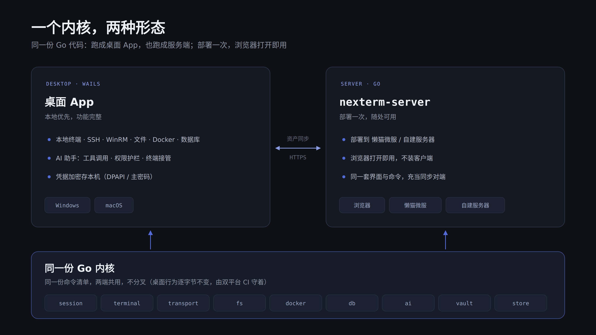
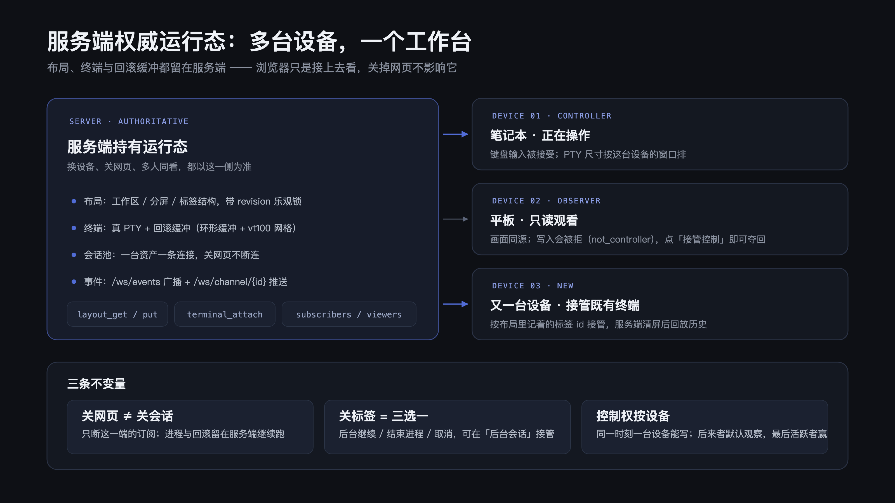
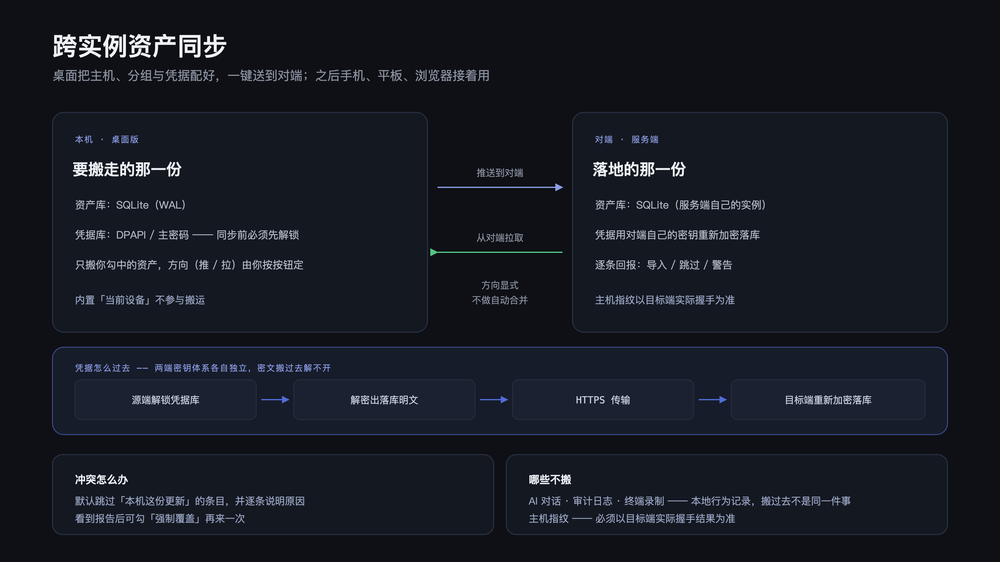
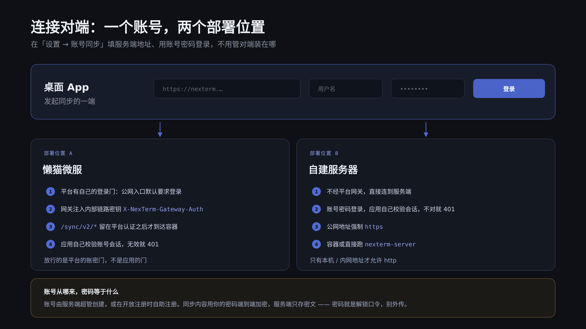

文件
SFTP 虚拟滚动、上传下载进度、内置编辑器与 MD5 / SHA256 校验。
不是功能堆叠，而是把命令、文件、数据与 AI 放进同一条工作流，让它既跑在桌面上，也跑在服务器上。
命令以卡片进入对话流，展开可见完整输出与退出码；危险操作一律拒绝，敏感操作先经确认。
工作区、分屏面板、标签三层结构；一台资产一条连接复用，断线按指数退避自动重连。终端会话自动录制，可在「终端历史」回看文本或按时间轴回放。
SFTP 虚拟滚动、上传下载进度、内置编辑器与 MD5 / SHA256 校验。
MySQL 库表浏览与 SQL 工作台；Redis SCAN 分页、类型感知查看与命令台。
容器列表、日志 follow、容器终端、镜像管理、容器文件浏览与批量操作。
本地转发与 SOCKS5 动态转发复用已有会话，直达内网资源。监听地址由部署形态决定：桌面回环、自建服务端对外、懒猫微服上不可用。
两级密钥信封加密，日志自动脱敏；管理面板呈现引用关系与删除保护，支持 Windows DPAPI / macOS 钥匙串免主密码模式。桌面端凭据只落本机；部署成服务端时，凭据库与主密钥在服务端这一侧。
主密码 → Argon2id → KEK → 信封加密 DEK → AES-GCM服务端内置账号体系，同步数据按账号隔离；主机装设备 agent 纳入设备列表，随时远程打开终端。
同一个 Go 核心：装在本机是桌面 App，部署到服务器就是浏览器里的运维终端。

本地优先、功能完整。Windows、macOS 与 Linux 安装即用，凭据加密存在自己机器上。
部署一次，随处可用。浏览器打开就是完整界面，不用装任何客户端，而且运行态在服务端，不只是「投屏」。
不是「投屏」。终端进程、回滚缓冲与工作区布局都跑在那台常开的机器上，浏览器只是接上去看；换设备、关网页、多人同看，都以此为准。

另一台设备打开网页，按服务端记着的标签 id 接管那条已有终端：看到的是原来那条连接和它已有的输出，不是一个新开的空 shell。
终端可被多台设备观看，同一时刻只有一台能操作。非控制者写入被拒并提示「接管控制」，点一下即换人，PTY 按接管者的窗口重排。
关网页只断这一端的订阅，进程与回滚继续在服务端跑。关闭标签不再三选一：SSH 守护终端直接转入「后台会话」，之后可随时接管；本机、WinRM 非交互与容器 exec 等普通终端随标签关闭结束，关闭前会再确认一次。
工作区、分屏与标签结构带一个 revision 存在服务端；任一端改动即广播给其余各端，打开时照此重建。
同一条「把远端端口搬到服务端」的功能，监听在哪由部署形态决定。
127.0.0.1，转发只给自己用0.0.0.0，可把远端服务搬到服务端端口上桌面把主机、分组与凭据配好，一键送到对端；之后手机、平板、浏览器接着用。

分组、资产、凭据、片段整组同步，按「推送到云端」或「拉取并应用」，方向由你按按钮定；SSH 私钥这类载荷不做自动合并，逐对象按修订号裁决。
本机较新的条目先跳过、随推送覆盖云端；每轮报告分类计数。删除以墓碑同步，两端收敛一致。
同步内容在客户端加密，同步对端只存密文；同一账号的其他设备用账号密码解锁数据密钥，解密后应用到当前实例。
在「设置 → 账号同步」填「服务端地址 + 用户名 + 密码」登录就能连上，不用管对端装在哪：懒猫微服或自建服务器，账号是同一套机制。

每次发版八个产物：Windows / macOS / Linux 桌面客户端（各 amd64 与 arm64）、Linux 服务端包（amd64 与 arm64）；懒猫微服专版在应用中心安装，不经 Release 下载。
--sync-only 即只挂同步端点# 完整版：界面 + 全部命令 # 裸启动就是 serve（容器里就这条） $ nexterm-server # sync-only：同一个二进制，只挂账号与同步路由 $ nexterm-server --sync-only \ --data-dir /var/lib/nexterm # 首次启动打印一次性初始化码，浏览器打开完成超管初始化 $ nexterm-server --data-dir /var/lib/nexterm # 自查：sync-only 不挂 /rpc（404），/healthz 如实上报命令数 $ curl -s 127.0.0.1:8080/healthz # "syncOnly":true,"commands":3
带完整浏览器界面，打开 http://<地址>:8080 即用。
127.0.0.1 并显式声明 --auth on，对外自己接反代--auth on）：/rpc、/ws、/files/blob 一律要求登录账号会话（/healthz 与页面公开），浏览器首次打开进入初始化或登录页，公网仍建议套 TLS 反代同一个二进制加 --sync-only：只挂 /auth/*、/admin/*、/sync/v2/*、/sync/rpc 与 /healthz。
/rpc 都不存在；/sync/rpc 只有对端同步三命令（digest / export / import）nexterm-onlyserver.service，换装即切换--auth on）：/rpc、/ws 与 /files/blob 没有登录会话一律拒绝，/healthz 与页面静态资源公开；浏览器首次打开会进入初始化或登录页（账号未初始化时，一次性初始化码打印在服务端控制台）。回环免登录仅限显式 --auth loopback（会校验 Host 防 DNS 重绑定），且不适合反代场景。会话走 Cookie，公网部署前面必须终止 TLS，并建议用防火墙限制来源。公网只想做资产同步，请用 --sync-only 模式：它只挂账号与同步路由，不注册任何终端命令。懒猫微服上由平台登录门加网关注入的网关密钥放行内部链路，无需额外配置。nexterm-server agent enroll --server <接入地址> --code <接入码>，把接入码兑换成设备凭证，再执行 nexterm-server agent install 把设备 agent 装成随登录自启的 per-user 服务。回到「设备管理」刷新，设备显示「在线」。全新 Linux 机器（无需已装二进制）可用面板里的一行安装命令一次完成下载、校验、注册与服务安装。0.0.0.0，可以把远端 127.0.0.1 上的服务搬到服务端端口上访问。